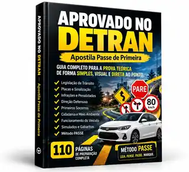

APOSTILA PASSE DE PRIMEIRA
Prepare-se para a prova teórica do DETRAN com mais clareza
Um material direto, visual e organizado para estudar, revisar e praticar sem se perder em informações soltas.

R$ 9,97
Pagamento único
QUERO COMEÇAR A ME PREPARAR
Estude com mais clareza e menos confusão
Tudo organizado em um só materialRevise os principais assuntos sem precisar pular entre vídeos, pesquisas e conteúdos espalhados.
Método PASSE para interpretar questõesUse uma sequência simples para analisar comandos, eliminar alternativas e responder com mais atenção.
Teoria + prática + revisãoEstude o conteúdo, teste seus conhecimentos, identifique erros e descubra o que precisa revisar.
O que você recebe
Um pacote de preparação pensado para facilitar sua rotina de estudos antes da prova.
✓ Apostila visual Passe de Primeira
✓ Simulados para praticar
✓ Gabaritos comentados e revisão de erros
✓ Guia visual de placas de trânsito
✓ Revisão Turbo para os dias finais
✓ Caderno dos Erros para acompanhar sua evolução
Método PASSE
Uma forma simples de desacelerar, interpretar e responder cada questão com mais atenção.
P
PareLeia sem pressa.
A
AnaliseEntenda o comando.
S
SublinheAche palavras-chave.
S
SepareElimine alternativas ruins.
E
EscolhaMarque com segurança.
Feito para quem quer saber o que revisar
Está começando agoraOrganize os assuntos em uma sequência fácil de acompanhar.
Já estudou, mas esqueceUse revisões e exercícios para reforçar os pontos mais importantes.
Fica inseguro nas alternativasPratique interpretação e eliminação de respostas com mais atenção.
Apostila Passe de Primeira
Material de preparação + simulados + Método PASSE + bônus.
R$ 9,97
Pagamento único.
QUERO COMEÇAR A ME PREPARARAprovação não é garantida. O material é educacional e tem como objetivo auxiliar na preparação para a prova teórica. Consulte também as orientações oficiais do órgão de trânsito responsável pelo seu processo de habilitação.